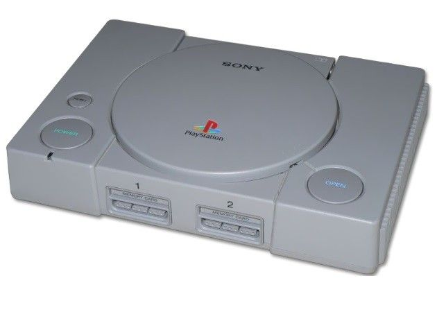

Es una revista online especializada en videojuegos. Un equipo de periodistas y profesionales a los que, por encima de todas las cosas, les gusta disfrutar con los juegos. Un medio donde la opinión de los lectores es lo más importante y además, cuenta de verdad. No por casualidad tenemos la comunidad de habla hispana más grande centrada en videojuegos. Una revista abierta siempre a las ideas nuevas y a todo tipo de jugadores. Una comunidad que se construye en equipo y que gira alrededor del videojuego.
PlayStation (プレイステーション Pureisutēshon, oficialmente abreviada como PS1) es la primera videoconsola de Sony, y la primera de dicha compañía en ser diseñada por Ken Kutaragi, y es una videoconsola de sobremesa de 32 bits lanzada por Sony Computer Entertainment el 3 de diciembre de 1994 en Japón. Se considera la videoconsola más exitosa de la quinta generación tanto en ventas como en popularidad. Además de la original, en el año 2000 se lanzó la PSone (también llamado modelo slim). Tuvo gran éxito al implantar el CD-ROM dentro de su hardware a pesar de que otras compañías como SEGA (Sega CD), Panasonic (3DO), Philips (CD-i), SNK (Neo Geo CD), NEC (Super CD-ROM) y Atari (Atari Jaguar) ya lo habían empleado. Dichas compañías tuvieron poco éxito al utilizar el CD-ROM como soporte para almacenar juegos. Se estima que Sony pudo vender 102,4 millones de consolas1 en diez años. La consola fue retirada oficialmente del mercado el 23 de marzo de 2006.